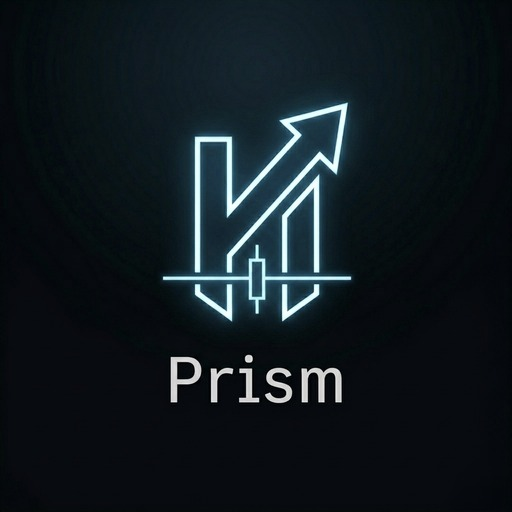

Prism
Static Frontend Snapshots
STATIC · NO API
Prism 前端快照入口
这里仅作为四个已静态化 Prism 前端页面的导航入口。页面使用脱敏 mock 数据，不连接生产系统。
Public-safe static snapshot. No live API, no account data, no internal logs, no production endpoint.